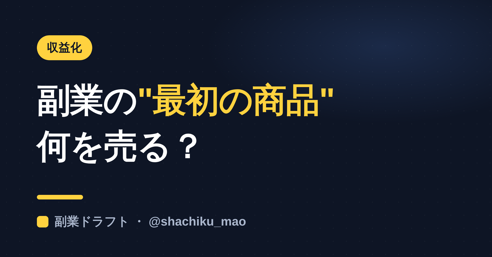
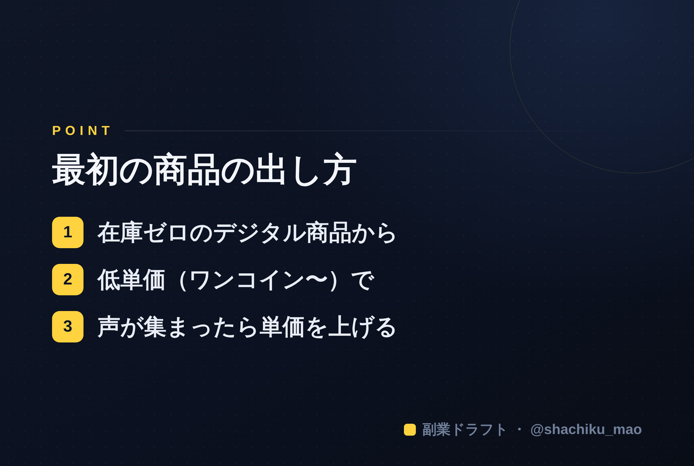

使い方
1. 「タイトルをコピー」→ note のタイトル欄に貼る
2. オレンジのラベルの画像（見出し画像）を note の見出し画像に設定
3. 「本文1をコピー」→ note本文に貼る
4. 青いラベルの位置（本文の途中）に、同じ名前の画像をアップして挿入
5. 「本文2をコピー」→ 続きを貼る
※ 見出しが普通の文字になったら、その行を選んで「大見出し」に設定してください
1. 「タイトルをコピー」→ note のタイトル欄に貼る
2. オレンジのラベルの画像（見出し画像）を note の見出し画像に設定
3. 「本文1をコピー」→ note本文に貼る
4. 青いラベルの位置（本文の途中）に、同じ名前の画像をアップして挿入
5. 「本文2をコピー」→ 続きを貼る
※ 見出しが普通の文字になったら、その行を選んで「大見出し」に設定してください
副業の"最初の商品"は何を売る？低リスクで始める順番
見出し画像に設定：seo-10.png

発信に慣れてくると「そろそろ商品を作って売りたい」と考え始めます。でも、いきなり高額商品や在庫を抱える物販から入ると、リスクが大きい。この記事では、会社員が低リスクで"最初の商品"を出す順番を解説します。
大前提：最初は"在庫ゼロ・低単価"から
最初の商品は、売上より「売れる体験と、お客様の声」を得るのが目的です。だから、在庫を持たず、作り直しがきくものから始めます。
おすすめの順番
① 自分の知識・経験を"情報"にして売る
一番低リスクなのが、知識をまとめたデジタル商品（note有料記事など）。在庫ゼロ、原価ゼロ、作り直し自由です。発信で溜めたノウハウを、1つにまとめるだけ。
② 低単価から始める（ワンコイン〜）
最初から高く売ろうとしない。¥500〜¥1,000くらいの"入口商品"で、まず「買ってもらう体験」を作ります。買ってくれた人の感想が、次の商品の信頼になります。
③ 声が集まったら、単価を上げる／個別サポートへ
レビューや実績が溜まったら、より深い内容や、1対1のサポートなど単価の高い商品へ。順番に階段を上がれば、無理なく育てられます。
やってはいけないこと
- いきなり高額・いきなり在庫（リスクが高い）
- 実績ゼロで売り込む（まず無料・低単価で信頼を作る）
- 「全員向け」の商品（誰の悩みを解決するか1つに絞る）
本文中に挿入：seo-10-body.png（この記事のポイント）

まとめ
- 最初は在庫ゼロ・低単価のデジタル商品から
- 目的は売上より"売れる体験と声"
- 声が溜まったら単価を上げる
※ ここからは宣伝です。 売る前の「強みの言語化」をAIが手伝う自作ツール「副業ドラフト」を用意しています。ヒヤリング・強み棚卸し・Threads3本まで無料で試せます → https://note-threadssf.onrender.com
🎁 発信・商品づくりのノウハウは公式LINEで無料配布中 → https://lin.ee/RzyA13P
役に立ったら、スキ＆フォローで応援してもらえると嬉しいです😊